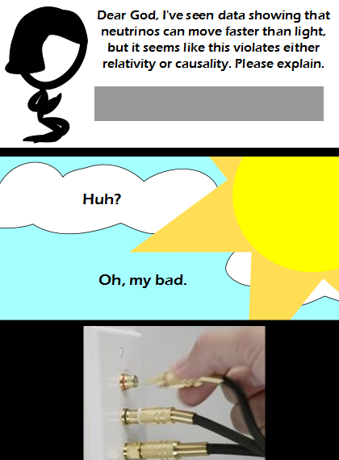

Comic JK 878
When I Feel Like It
⇤
<
?
>
⇥

⇤
<
?
>
⇥
Forum
.
RSS
.
Digg
.
Facebook
.
Reddit
.
Twitter
.
Stumbleupon
Madlib => HZZP: Hyper ____ ____ Protocol Enter your thoughts on number 878 here. Please, no spamming, trolling, phreaking, or unplugging and plugging it back in again. Took them well long enough to figure that one out. >actually they did it very quickly... so quickly in fact, that to an observer, the effects of time dilation became significant... 99.999% uptime, but 100.004% the speed! >+1 >>+1 What exactly is god plugging in (or unplugging...?) in that last frame? Coax? What do they represent? >Looks like Monster brand RCA. Also, loose cable on the test indicated in panel 1. >> hzzp://www.wired.com/wiredscience/2012/02/neutrinos-faulty-cable/. I believe the joke is pretending that the "Faulty cable" was God's, not the scientists' (makes more sense if you have read only the headline). >>> hzzp: the Hyper Zest Zinger Protocol >>>>or is this the "retcon theory of reality" ? an inconsistency ( or bug ) has been found in reality: faster-than-light neutrinos... faced with that error, the author ( or programmer ) of the universe has now retconned it as "a cable fault"... ? The CERN experiment that resulted in faster than light neutrinos seems to have actually been false due to a faulty optical cable jack. This is God fixing the jack. Get out of my head author i was just wondering today what ever came out of the FTL nNeutrino's story something just occured to me... given yesterday's comic was on the subject of "bias", is it significant that the "Hand Of God" in today's comic is clearly the hand of a white male... ? >DUN DUN DAHHH >>well he could be black but albino >>>is that suggestion off the wall, or bad enough to be a thriller... ? >>>>God changes what he looks like every day. He said something about preventing boredom.